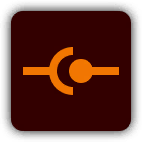
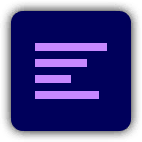

アレフ 阿莱夫
基本情報
| ID | 077 |
|---|---|
| 名前 | アレフ (阿莱夫) |
| レア度 | |
| 属性 | |
| タイプ | |
| 戦闘方法 | |
| 陣営 | 戯火教 |
| 職業 | |
| 誕生日 | |
| 実装Ver | |
| 施設専攻 | |
| 施設効果 | |
| タグ | 治療消散強化 |
専門探索
|

|
|

|
|
|
|---|---|---|---|---|
| 上: 専門探索(初期値) / 下: 専門探索(最大値) | ||||
基本ステータス
| 項目 | 初期値 | 最大値 |
|---|---|---|
| HP | 5817 | |
| 攻撃 | 816 | |
| 物理防御 | 4071 | |
| 特殊防御 | 2698 | |
| 行動速度 | 277 |
キャラ画像


立ち絵: fb / 認証絵: fb_awake / スキン: skin*
ロム情報
候補1
候補2:
スキル

傾盤軸転 通常攻撃 TPLv +8
タグ:
火力治療
アレフは選択した敵に90%の物理ダメージを与え、自身の最大HPの5%に基づき最もHPの低い味方を治療する。
スキルボーナス
(ボーナス情報なし)

宿命揺蕩 戦術スキル TPLv -20
タグ:
治療消散
アレフは選択した味方の全てのデバフ効果を解除し、自身の最大HPの200%に基づき選択した味方を治療する。さらに目標の損失HPに応じて治療率が上昇する（上限50%）。
スキルボーナス
四重門
【宿命揺蕩】TPLv消費が10減少する。
【宿命揺蕩】TPLv消費が10減少する。

回旋舞曲 超限スキル TPLv -40
タグ:
治療消散範囲
アレフは味方全体のデバフ効果を2層解除し、自身の最大HPの35%に基づき味方全体を治療する。さらに<荒唐な舞歩>>1層付与する：宿主がダメージを与えた時、与ダメージの25%に基づき宿主を定量治療し、発動後に<荒唐な舞歩>>1層消費する。最大3層まで存在可能。超限スキル終了時、デバフ状態でない味方1人ごとに、アレフは1点のTPLvを獲得する。
スキルボーナス
一重門
【回旋舞曲】解除するデバフ効果の層数がさらに1層増加し、獲得するTPLvがさらに3点増加する。
【回旋舞曲】解除するデバフ効果の層数がさらに1層増加し、獲得するTPLvがさらに3点増加する。
中級認証
【回旋舞曲】50%の確率で<荒唐な舞歩>>1層追加で付与する。
【回旋舞曲】50%の確率で<荒唐な舞歩>>1層追加で付与する。

躊躇の歩法 天賦 TPLv
タグ:
強化
味方がダメージを与える時、デバフ効果を持っていない場合、与えるダメージが10%上昇する。味方がダメージを受ける時、デバフ効果を持っていない場合、受けるダメージが5%減少する。味方がデバフ効果を付与された時、そのデバフ効果を抵抗する。各行動シーケンスで最大1回まで発動。
スキルボーナス
上級認証
【躊躇の歩法】目標を治療した後、目標のHPが100%の場合、自身の最大HPの3%に基づき目標に防護を付与する。
【躊躇の歩法】目標を治療した後、目標のHPが100%の場合、自身の最大HPの3%に基づき目標に防護を付与する。
特級認証
【躊躇の歩法】行動シーケンス終了時、HPが最も低い味方の被治療率を20%上昇させる。効果は次の行動シーケンス終了まで持続。
【躊躇の歩法】行動シーケンス終了時、HPが最も低い味方の被治療率を20%上昇させる。効果は次の行動シーケンス終了まで持続。

サポート：回旋舞曲 サポート TPLv
タグ:
治療消散範囲
アレフは味方全体のデバフ効果を2層解除し、自身の最大HPの25%に基づき味方全体を治療する。さらに<荒唐な舞歩>>1層付与する：宿主がダメージを与えた時、与ダメージの25%に基づき宿主を定量治療し、発動後に<荒唐な舞歩>>1層消費する。最大3層まで存在可能。
スキルボーナス
(ボーナス情報なし)
階門
一重門
【回旋舞曲】スキルボーナスを解放
【回旋舞曲】解除するデバフ効果の層数がさらに1層増加し、獲得するTPLvがさらに3点増加する。
二重門
基本ステータス上昇を解放：HP+5.0%、攻撃+5.0%、物理防御+5.0%、特殊防御+5.0%
三重門
【躊躇の歩法】スキル強化を解放
味方がダメージを与える時、デバフ効果を持っていない場合、与えるダメージが10%上昇する。味方がダメージを受ける時、デバフ効果を持っていない場合、所受の傷害が5%低下する。味方がデバフ効果を付与された時、そのデバフ効果を抵抗する。各行動シーケンスで最大1回まで発動。
四重門
【宿命揺蕩】スキルボーナスを解放
【宿命揺蕩】TPLv消費が10減少する。
五重門
基本ステータス上昇を解放：HP+12.0%、攻撃+12.0%、物理防御+12.0%、特殊防御+12.0%
較正情報
| 項目 | 内容 |
|---|---|
| 特定較正1 | 未実装 |
| 特定較正2 | 未実装 |